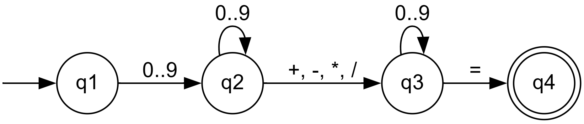
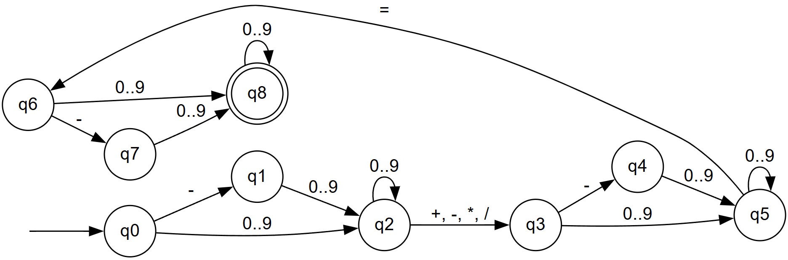
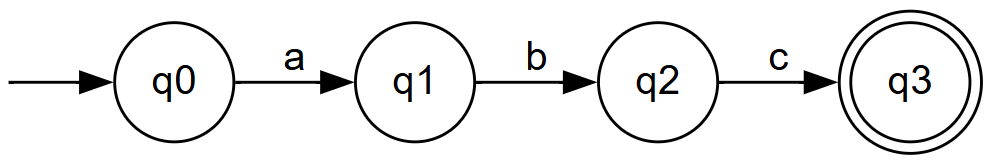
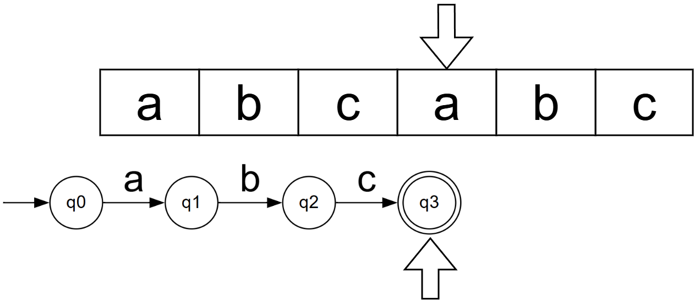
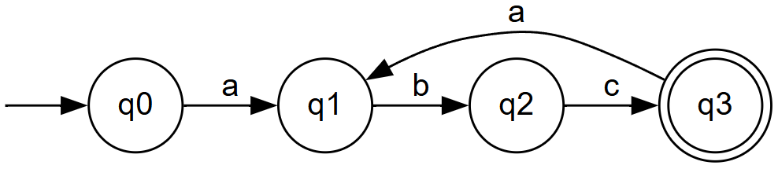
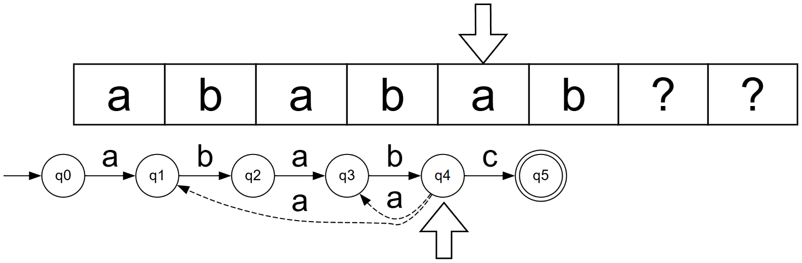
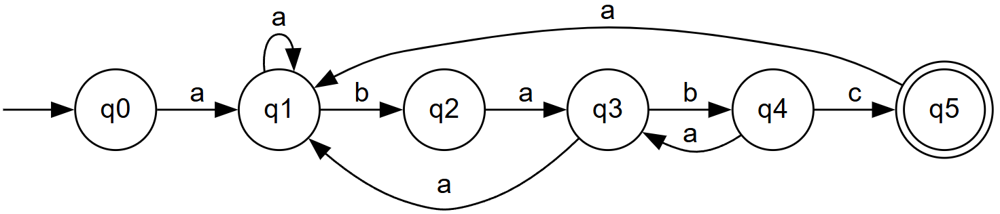
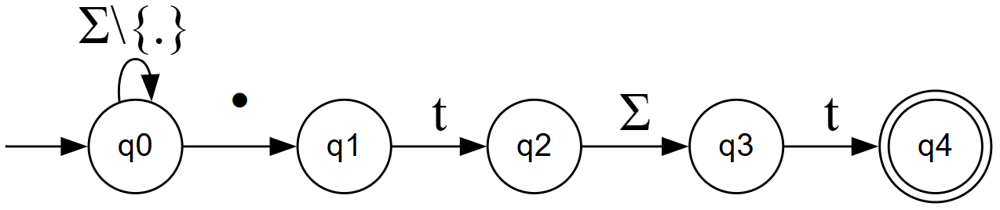
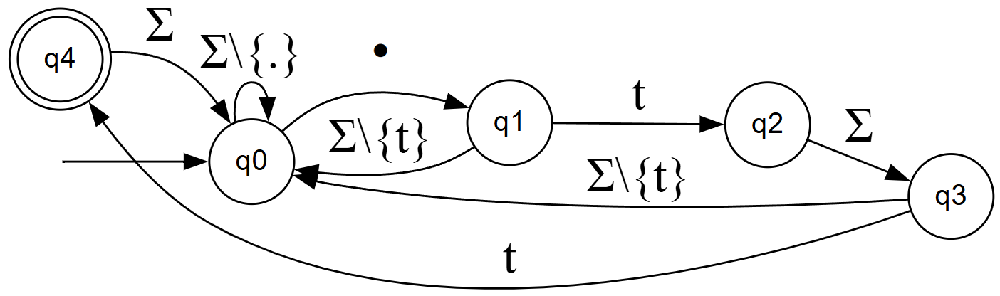

Теперь дадим формальное определение детерминированного конечного автомата $M$. Он состоит из:
Приведём пример функции переходов для калькулятора
$\delta(q_0, 0..9) = q_1$
$\delta(q_1, 0..9) = q_1$
$\delta(q_1, \{+, -, *, /\}) = q_2$
$\delta(q_2, 0..9) = q_2$
$\delta(q_2, =) = q_3$
| $q_i \backslash \Sigma_j$ | $0$ | $1$ | $2$ | $3$ | $...$ | $+$ | $-$ | $*$ | $/$ | $=$ |
|---|---|---|---|---|---|---|---|---|---|---|
| $q_0$ | $q_1$ | $q_1$ | $q_1$ | $q_1$ | $...$ | - | - | - | - | - |
| $q_1$ | $q_1$ | $q_1$ | $q_1$ | $q_1$ | $...$ | $q_2$ | $q_2$ | $q_2$ | $q_2$ | - |
| $q_2$ | $q_2$ | $q_2$ | $q_2$ | $q_2$ | $...$ | - | - | - | - | $q_3$ |




Таким образом, функция перехода конечного автомата для поиска подстроки в строке дополняется следующим образом
$$\delta(q_j, t_i) = q_{\sigma_s(s_{0..j}t_i)}$$Тогда полный набор значений функции перехода будет строиться по следующему правилу:
$$\forall t_i \in \Sigma, j = \overline{0..M}: \delta(q_j, t_i) = q_{\sigma_s(s_{0..j}t_i)}$$ $$\forall j = \overline{1..M}: \delta(q_{j-1}, s_j) = q_j$$Результирующий конечный автомат с данной функцией перехода будет выглядеть следующим образом (переходы в состояние $q_0$ не изображены)

cp *.txt folder
Попробуем построить конечный автомат, соответствующий выражению *.t?t

file.txt, aaa.tst, 0123.tat и т.д.*.t?t соответствует также строкам file.tat.tot.txt, abc.tbt.tct и т.п.Модифицируем наш автомат, чтобы он корректно принимал все строки, соответствующие выражению *.t?t
